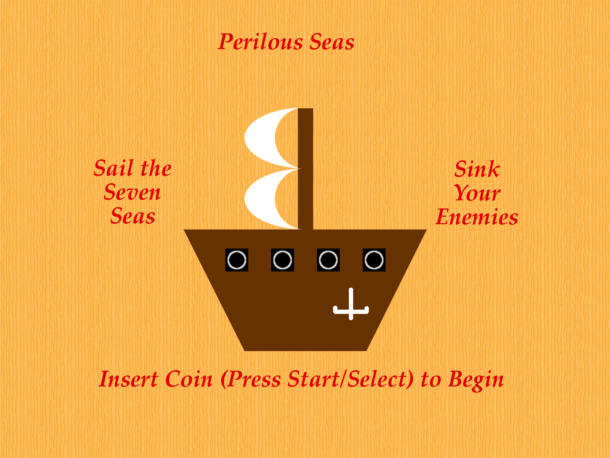

Perilous Seas (2007)

Authors
Unknown
Description
Sail the seven seas. Sink your enemies.
Downloads
Compatibility notes.
Confirmed working on Windows 10. Performs a lengthy 'memory test' on startup. Requires an arcade pad for input.
This is a fixed version containing OpenAL-Soft.